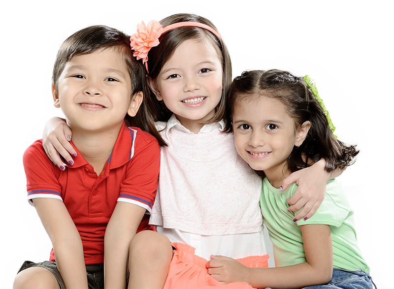

PHILOSOPHY
CHILD-CENTERED
We, at Haven of Hope Kindergarten, believe that the children are natural learners who are best motivated in a secure and nurturing environment. That children are individuals and that each child is unique. All students come to school with different needs and capabilities.It is the teacher’s job to acknowledge these differences and attempt to meet these varied needs by moving each child forward from where s/he currently is. This is accomplished through provision of a variety of open-ended learning activities designed to allow children to work at their own level.
